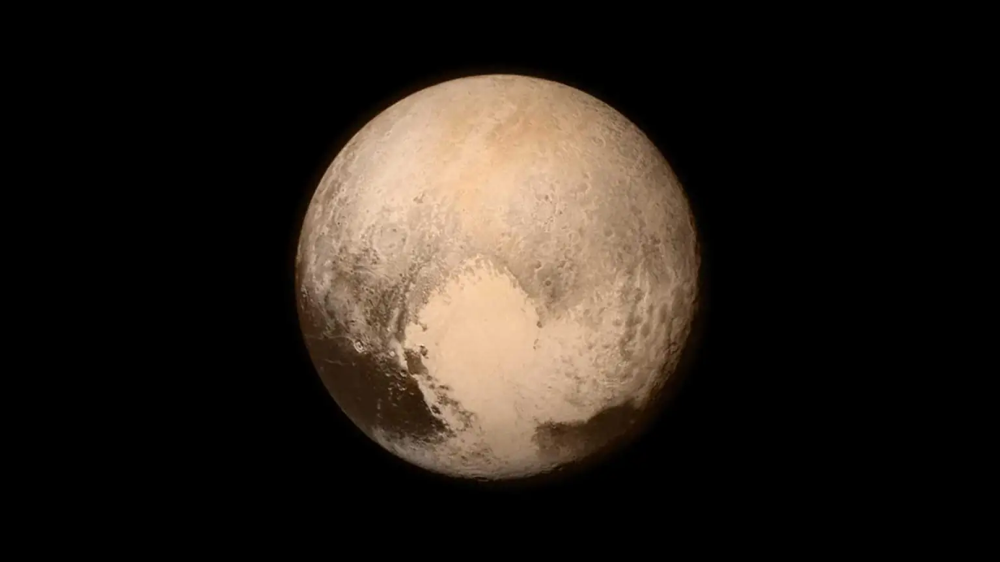
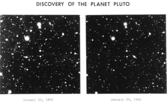
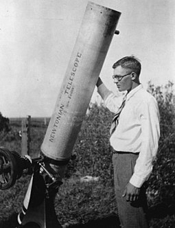
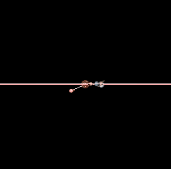
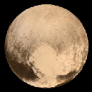

| 
Pluto, imaged by the New Horizons spacecraft, July 2015. The most prominent feature in the image, the bright, youthful plains of Tombaugh Regio and Sputnik Planitia, can be seen at right. It contrasts the darker, cratered terrain of Belton Regio at lower left |
Pluto (minor-planet designation: 134340 Pluto) is a dwarf planet in the Kuiper belt, a ring of bodies
beyond the orbit of Neptune. It is the ninth-largest and tenth-most-massive known object to directly orbit the Sun.
It is the largest known trans-Neptunian object by volume, by a small margin, but is less massive than Eris. Like other
Kuiper belt objects, Pluto is made primarily of ice and rock and is much smaller than the inner planets. Pluto has roughly
one-sixth the mass of the Moon, and one-third its volume. Pluto has a moderately eccentric and inclined orbit, ranging from 30 to 49 astronomical units (4.5 to 7.3 billion kilometres; 2.8 to 4.6 billion miles) from the Sun. Light from the Sun takes 5.5 hours to reach Pluto at its orbital distance of 39.5 AU (5.91 billion km; 3.67 billion mi). Pluto's eccentric orbit periodically brings it closer to the Sun than Neptune, but a stable orbital resonance prevents them from colliding. Pluto has five known moons: Charon, the largest, whose diameter is just over half that of Pluto; Styx; Nix; Kerberos; and Hydra. Pluto and Charon are sometimes considered a binary system because the barycenter of their orbits does not lie within either body, and they are tidally locked. New Horizons was the first spacecraft to visit Pluto and its moons, making a flyby on July 14, 2015, and taking detailed measurements and observations. Pluto was discovered in 1930 by Clyde W. Tombaugh, making it by far the first known object in the Kuiper belt. It was immediately hailed as the ninth planet, but it was always the odd object out,and its planetary status was questioned when it was found to be much smaller than expected. These doubts increased following the discovery of additional objects in the Kuiper belt starting in the 1990s, and particularly the more massive scattered disk object Eris in 2005. In 2006, the International Astronomical Union (IAU) formally redefined the term planet to exclude dwarf planets such as Pluto. Many planetary astronomers, however, continue to consider Pluto and other dwarf planets to be planets. |
|
In the 1840s, Urbain Le Verrier used Newtonian mechanics to predict the position of the then-undiscovered planet Neptune after
analyzing perturbations in the orbit of Uranus. Subsequent observations of Neptune in the late 19th century led astronomers to
speculate that Uranus's orbit was being disturbed by another planet besides Neptune. In 1906, Percival Lowell—a wealthy Bostonian who had founded Lowell Observatory in Flagstaff, Arizona, in 1894—started an extensive project in search of a possible ninth planet, which he termed Planet X. By 1909, Lowell and William H. Pickering had suggested several possible celestial coordinates for such a planet. Lowell and his observatory conducted his search, using mathematical calculations made by Elizabeth Williams, until his death in 1916, but to no avail. Unknown to Lowell, his surveys had captured two faint images of Pluto on March 19 and April 7, 1915, but they were not recognized for what they were. There are fourteen other known precovery observations, with the earliest made by the Yerkes Observatory on August 20, 1909. Percival's widow, Constance Lowell, entered into a ten-year legal battle with the Lowell Observatory over her husband's legacy, and the search for Planet X did not resume until 1929. Vesto Melvin Slipher, the observatory director, gave the job of locating Planet X to 23-year-old Clyde Tombaugh, who had just arrived at the observatory after Slipher had been impressed by a sample of his astronomical drawings. Tombaugh's task was to systematically image the night sky in pairs of photographs, then examine each pair and determine whether any objects had shifted position. Using a blink comparator, he rapidly shifted back and forth between views of each of the plates to create the illusion of movement of any objects that had changed position or appearance between photographs. On February 18, 1930, after nearly a year of searching, Tombaugh discovered a possible moving object on photographic plates taken on January 23 and 29. A lesser-quality photograph taken on January 21 helped confirm the movement.After the observatory obtained further confirmatory photographs, news of the discovery was telegraphed to the Harvard College Observatory on March 13, 1930. One Plutonian year corresponds to 247.94 Earth years; thus, in 2178, Pluto will complete its first orbit since its discovery. |

Discovery photographs of Pluto  Clyde Tombaugh, in Kansas |
||||||||
|
|||||||||
|---|---|---|---|---|---|---|---|---|---|
ORBITPluto's orbital period is about 248 years. Its orbital characteristics are substantially different from those of the planets, which follow nearly circular orbits around the Sun close to a flat reference plane called the ecliptic. In contrast, Pluto's orbit is moderately inclined relative to the ecliptic (over 17°) and moderately eccentric (elliptical). This eccentricity means a small region of Pluto's orbit lies closer to the Sun than Neptune's. The Pluto–Charon barycenter came to perihelion on September 5, 1989, and was last closer to the Sun than Neptune between February 7, 1979, and February 11, 1999.Although the 3:2 resonance with Neptune (see below) is maintained, Pluto's inclination and eccentricity behave in a chaotic manner. Computer simulations can be used to predict its position for several million years (both forward and backward in time), but after intervals much longer than the Lyapunov time of 10–20 million years, calculations become unreliable: Pluto is sensitive to immeasurably small details of the Solar System, hard-to-predict factors that will gradually change Pluto's position in its orbit. The semi-major axis of Pluto's orbit varies between about 39.3 and 39.6 AU with a period of about 19,951 years, corresponding to an orbital period varying between 246 and 249 years. The semi-major axis and period are presently getting longer. ROTATIONPluto's rotation period, its day, is equal to 6.387 Earth days. Like Uranus and 2 Pallas, Pluto rotates on its "side" in its orbital plane, with an axial tilt of 120°, and so its seasonal variation is extreme; at its solstices, one-fourth of its surface is in continuous daylight, whereas another fourth is in continuous darkness. The reason for this unusual orientation has been debated. Research from the University of Arizona has suggested that it may be due to the way that a body's spin will always adjust to minimize energy.This could mean a body reorienting itself to put extraneous mass near the equator and regions lacking mass tend towards the poles. This is called polar wander. According to a paper released from the University of Arizona, this could be caused by masses of frozen nitrogen building up in shadowed areas of the dwarf planet. These masses would cause the body to reorient itself, leading to its unusual axial tilt of 120°. The buildup of nitrogen is due to Pluto's vast distance from the Sun. At the equator, temperatures can drop to −240 °C (−400.0 °F; 33.1 K), causing nitrogen to freeze as water would freeze on Earth. The same polar wandering effect seen on Pluto would be observed on Earth were the Antarctic ice sheet several times larger. |

Orbit of Pluto – ecliptic view. This "side view" of Pluto's orbit (in red) shows its large inclination to the ecliptic. Neptune is seen orbiting close to the ecliptic.  Rotation view of Pluto |
||||||||